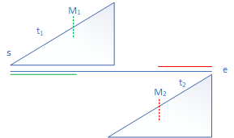

1. Inroduction to binary search
The key idea of binary search starts from the time complexity, which comes from the following equation.
$$\begin{equation}\label{eq1}
T(n) = T(n/2) + O(1) = O(\log n) \tag{1}
\end{equation}$$
Suggestion: If there exists an algorithm run in $O(n)$ time, the potential way to optimize it is to introduce binary search to do it in $O(\log n)$ time.
An interersting equations is given below.
$$\begin{equation}\label{eq2}
T(n) = T(n/2) + O(n) = O(2n) \tag{2}
\end{equation}$$
2. Time complexity to different problems
| time complexity | possible problems |
|---|---|
| $O(1)$ | rare |
| $O(\log n)$ | almost binary search |
| $O(\sqrt n)$ | factorization |
| $O( n)$ | all |
| $O(n^2)$ | array, enumerate, DP |
| $O(n^3)$ | array, enumerate, DP |
| $O(2^n)$ | combination |
| $O(n!)$ | permutation |
3. Template for binary search
1 | def findPos(nums, target): |
4. Applications
- example 1. the first/last position to be satisfied.
- example 2. search big sorted array with no end.
- example 3. search in rotated sorted array.
Consider the problem 3. We observe that it is not a standard sorted array. However, it has a property indicating that we can cut in half.
